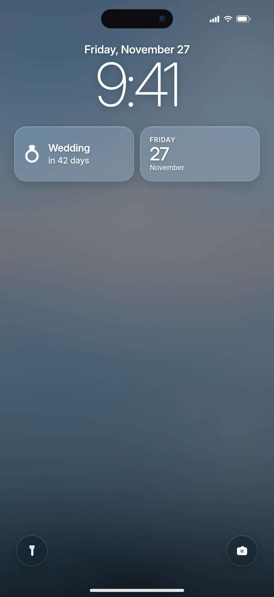
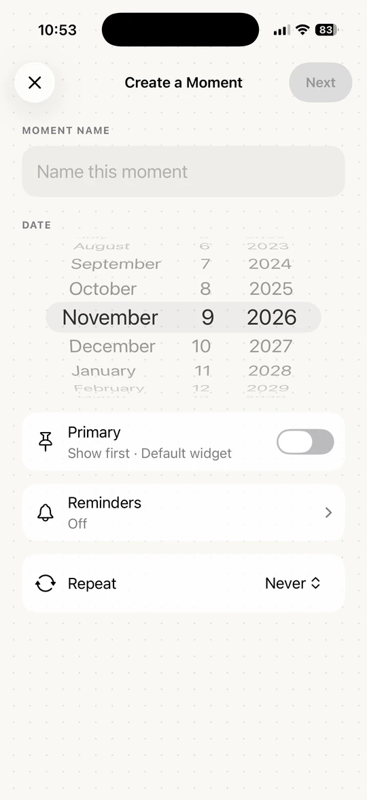

Add a Countdown Widget to Your iPhone Lock Screen
Yes. On iOS 16+, touch and hold, tap Customize, and add Dayfold to the widget area. Dayfold needs iOS 17.0 or later; it is monochrome.

Quick facts
| Can you? | Yes. iOS lets you add widgets to the Lock Screen widget area |
|---|---|
| System feature | Lock Screen widgets: iOS 16 or later |
| Dayfold app | iOS 17.0 or later |
| First step | Create and save a Moment in Dayfold, then add the widget |
| Lock Screen look | Monochrome, tinted by iOS to match the wallpaper |
| Full-color cards | Home Screen widgets (small or medium) |
| Several dates | Up to four active moments on the free plan |
| Price | Free to download; Dayfold Pro is optional (monthly or one-time Lifetime) |
Why the Lock Screen is the right place
A calendar alert disappears after you dismiss it. A widget on the Lock Screen is still there whenever you pick up the phone. That is the job: the name of the day you care about, and the day count, without opening an app.
iPhone does not include a built-in widget that counts down to or up from a date you choose. Dayfold is a countdown and days-since app with Lock Screen and Home Screen widgets. You create a Moment for the date, then pin it to the Lock Screen.
iOS 16 for the slot, iOS 17.0 for Dayfold
Apple added Lock Screen widgets in iOS 16. The steps below (touch and hold, Customize, tap the widget area) are that system feature.
Dayfold itself requires iOS 17.0 or later. If you can install Dayfold, you already have a new enough iOS for Lock Screen widgets. An older iPhone that is limited to iOS 15 or earlier cannot add a Lock Screen widget, and cannot install Dayfold.
How to add a countdown widget to your Lock Screen
- Download Dayfold and open it once, so iOS lists its widgets. Dayfold requires iOS 17.0 or later.
- Tap + to open Create a Moment.
- Name the moment and set Date to the future day you want to count down to.
- Optional: mark it Primary if it should be the default widget. Optional: set a reminder, or set Repeat for a birthday or anniversary that comes back every year.
- Save and choose a card style. Emoji, Flip Calendar and Ticket are free.
- On the Lock Screen, touch and hold until Customize appears, then tap Customize.
- Tap the Lock Screen widget area (under the clock, or near the bottom on newer iOS layouts).
- Choose Dayfold, then tap the widget and select the Moment you just created.
- Tap Done. Optionally add a small or medium Home Screen widget from the Home Screen gallery if you also want the full-color card.

Open the app once after a restart if a widget shows a placeholder; iOS sometimes waits until the first unlock to refresh widgets.
What the Lock Screen widget looks like
iOS draws Lock Screen widgets in a monochrome, system-tinted style so they stay readable on top of the wallpaper. You will not see Dayfold’s full-color card — the pastel background, the colored icon — in that slot. The day count and the name of the Moment are still there, just in the tinted style.
The full-color card, including styles such as Emoji, Flip Calendar and Ticket, appears on the Home Screen. Many people keep the same Moment in both places: a quick monochrome glance on the Lock Screen, and the color card on the Home Screen.
Dayfold’s public widgets show a day count, not a ticking clock down to the hour.
Occasions that work well
The same Lock Screen steps apply to any future date you have saved as a Moment:
- A birthday countdown, with yearly repeat if you want it to return next year
- An exam
- A wedding or a trip
- New Year 2027
The free plan allows four active moments. If you need more than four at once, Dayfold Pro unlocks unlimited moments.
Free and optional Pro
Dayfold is free to download. No account is required, and Moment content stays on your iPhone (cloud sync is not available). Four active moments and three card styles are free. Dayfold Pro, as a monthly plan or a one-time Lifetime purchase, unlocks unlimited moments, every card and widget style, advance reminders and additional milestones.
FAQ
Can I add a countdown widget to my iPhone Lock Screen?
Yes. On iOS 16 or later, touch and hold the Lock Screen, tap Customize, then tap the Lock Screen widget area and add a Dayfold widget. Dayfold itself requires iOS 17.0 or later. Create a Moment first, then select it on the widget.
Why is the Lock Screen widget monochrome?
iOS tints Lock Screen widgets to match the wallpaper, so they appear monochrome. Dayfold’s full-color cards are on the Home Screen.
Do I need to create a Moment before I add the widget?
Yes. Save a Moment in Dayfold first, add the Lock Screen widget, then tap the widget and select that Moment.
Can I show more than one countdown on the Lock Screen?
The Lock Screen widget area is limited by iOS, so only a small number of widgets fit there. You can keep up to four active moments on the free plan and choose which Moment a widget shows. Dayfold Pro unlocks unlimited moments.
Is Dayfold free?
Yes. Dayfold is free to download. You can keep four active moments and use three card styles without paying. Dayfold Pro is an optional monthly plan or one-time Lifetime purchase.